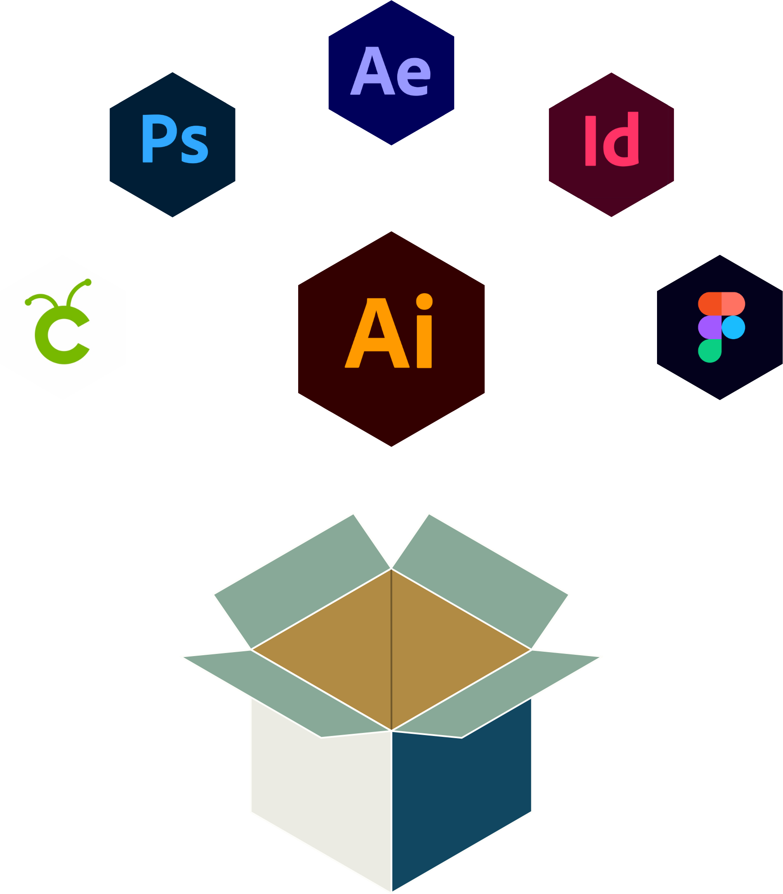

MIKKEL HYRUP
JOHANSEN
Multimediedesigner
skjult overskrift
Jeg ser mit
kreative sind som
en kasse fyldt flere forskellige
digitale og kreative færdigheder.
Kassen har således flere sider
og tilgange til at bidrage til god
visuel kommunikation og
digitalt indhold.
